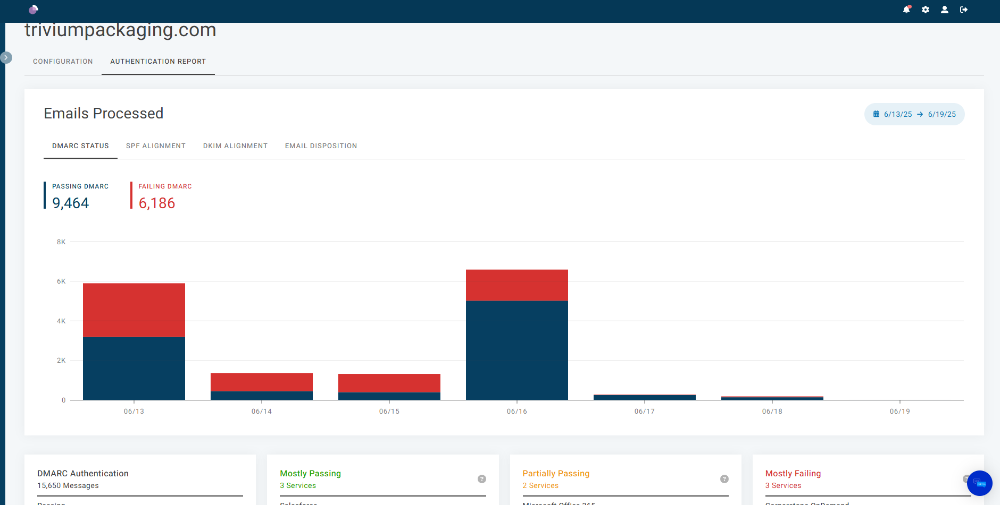
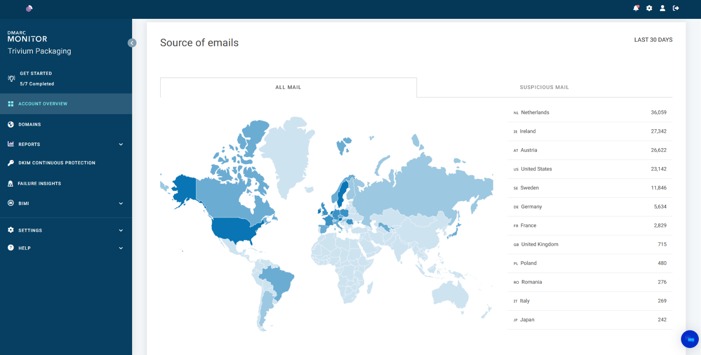

// DMARC
DMARC / Sécurisation des emails
Déploiement d'une politique de sécurité des emails complète à l'échelle d'un groupe industriel international. Analyse de dizaines de milliers de rapports pour migrer d'une politique d'observation à un blocage strict des emails frauduleux.
Contexte & Problématique
Durant mon stage de fin de deuxième année de BUT Réseaux & Télécommunications au sein de Trivium Packaging, j'ai intégré l'équipe InfoSec chargée de la sécurité des systèmes d'information. Trivium est une entreprise internationale présente dans 19 pays.
La problématique principale était la suivante : Comment renforcer la sécurité des échanges d'emails à l'échelle d'un groupe international, et passer d'une simple politique DMARC en mode observation (p=none) à une politique active (p=reject) bloquant les tentatives d'usurpation et de phishing ?
Objectifs
- Centraliser et exploiter les rapports DMARC accumulés (plus de 60 000).
- Identifier les sources d'envoi non conformes (prestataires tiers, serveurs SAP, etc.).
- Améliorer le taux d'alignement SPF/DKIM jusqu'à atteindre un niveau ≥ 95 %.
- Préparer et engager la migration progressive vers une politique
p=reject.
Démarche & Déploiement
Pour mener à bien cette mission, j'ai procédé par étapes en commençant par une étude approfondie des protocoles de sécurité email, avant de déployer techniquement la solution :
- Étape 1 : Compréhension des mécanismes SPF (serveurs autorisés), DKIM (signature cryptographique des messages) et DMARC (contrôle d'alignement et reporting).
- Étape 2 : Choix de la solution technique. Après une comparaison d'outils (DMARCian, EasyDMARC, OnDMARC), la solution Valimail a été retenue pour sa conformité RGPD et son hébergement européen.
- Étape 3 : Nettoyage complet de la boîte de réception DMARC via des scripts PowerShell développés sur mesure, et automatisation de la redirection vers Valimail.
- Étape 4 : Analyse de plus de 135 000 rapports XML sur 30 jours, ayant permis d'isoler et d'accompagner plusieurs prestataires non conformes.

Résultats & Difficultés
Le projet a permis de nettoyer et d'automatiser entièrement la boîte DMARC du groupe. Le taux d'alignement des protocoles a été drastiquement amélioré sur l'ensemble des services métiers principaux, respectant ainsi les recommandations de sécurité et préparant la bascule finale vers une politique de rejet total (p=reject).
Les principaux défis ont résidé dans le volume massif de données XML à traiter initialement, ainsi que la nécessité d'une montée en compétence rapide sur l'intégration des outils InfoSec de l'entreprise. Cette expérience m'a permis de développer de fortes compétences en Sécurité réseau, en Administration DNS (gestion des enregistrements TXT), ainsi qu'en automatisation PowerShell.
